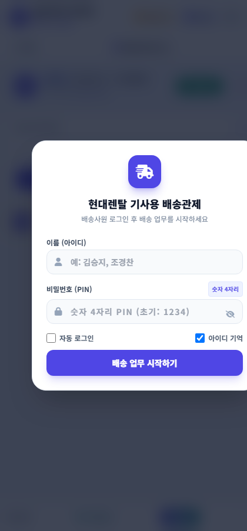

배송기사 스마트폰 모바일웹 (`mobile.html`)
스마트폰 하나로 출근, 티맵 안내, 도착 완료, 순서 변경, 센터 복귀 후 1분 운행마감까지 완벽 가이드
1 스마트폰 바탕화면 앱(PWA) 추가 & 4자리 PIN 로그인
바탕화면에 앱(바로가기) 1초 설치
기사님이 매번 긴 인터넷 주소를 입력할 필요 없이 일반 스마트폰 어플처럼 트럭 아이콘 앱으로 실행할 수 있습니다.
- 스마트폰 브라우저로 모바일 웹 접속
- 상단 노란색 [바로가기] 버튼 터치
- 안드로이드: [홈 화면에 추가] / 아이폰: 사파리 공유창 ➔ [홈 화면에 추가]
- 바탕화면에 "현대렌탈배송" 앱이 설치되어 1터치로 즉시 열립니다.
숫자 4자리 PIN 로그인
복잡한 영문 비밀번호 대신 현장에서 빠르고 편하게 숫자 4자리로 인증합니다.
- 이름: 본인 성명 입력 (예:
김승지,조경찬) - 비밀번호: 숫자 4자리 (초기 공통 비밀번호:
1234) - [자동 로그인] 체크: 다음 접속 시 로그인 창을 건너뛰고 오늘 배송 건이 바로 뜹니다.

📱 실제 모바일 로그인 화면
• 성명과 4자리 비밀번호(1234)를 입력하고 [자동 로그인]에 체크해두면 하루 종일 재로그인 없이 즉시 배송 화면으로 진입합니다.
• 비밀번호 변경이 필요할 경우 관제 PC 대시보드 우측 상단 메뉴의 [사용자 설정]에서 변경 가능합니다.
2 ★ 기사 하루 업무 전체 프로세스 & 1분 운행마감 (필독)
★ 현장 필수 준수 사항배송기사의 출근부터 배송 완료, 센터 복귀 및 퇴근 마감까지의 실제 5단계 업무 순서입니다.
모바일웹 상단 [차량선택]을 누른 뒤 오늘 탑승할 스타리아(예: 801부8744)를 선택합니다. 차량을 선택하면 이전 운행자(1팀 또는 기사)가 마감한 최종 계기판 Km가 내 시작 계기판으로 자동 연동됩니다.
오늘 나에게 배정된 배송지 목록을 확인합니다. 상단의 [🗺️ 전체 배송 지도 보기 & 실제 주행 경로] 버튼을 누르면 오늘 방문할 전체 경유지와 추천 도로 주행선을 지도에서 한눈에 볼 수 있습니다.
• 고객의 긴급 요청이나 교통 상황에 따라 각 카드의 [▲] / [▼] 버튼을 눌러 방문 순서를 즉시 바꿀 수 있으며, 변경 즉시 관제 PC 화면에도 동기화됩니다.
배송지로 출발할 때는 스마트폰 티맵 앱을 따로 켜지 마시고, 반드시 모바일웹의 로즈레드 색상 [티맵 안내] 버튼을 터치하여 출발하십시오!
- 버튼 터치 즉시: 관제 대시보드와 시간 관리 시스템에 기사님의 출발 시각이 초 단위로 자동 전송됩니다.
- 내비게이션 자동 실행: 고객사의 도로명 주소가 티맵 내비게이션 목적지로 자동 입력되어 즉시 길안내가 시작됩니다.
고객사 현장에 도착하면 즉시 [배송지 도착] 버튼을 누릅니다.
- 소요 시간 자동 산출: 출발 시각부터 도착 시각까지의 주행 소요시간(예: 35분 소요)이 시스템에 기록됩니다.
- 현장 사진 첨부: 부재중 문 앞 보관 사진이나 설치 완료 사진은
[📷 사진 첨부]로 등록 시 데이터 절약을 위해 자동 압축되어 클라우드에 영구 저장됩니다. - 고객 통화: 초록색 전화기 버튼을 누르면 오발신 방지 확인 후 스마트폰 통화 화면으로 바로 연결됩니다.
모든 배송을 마치고 가산 센터로 복귀하면 상단 운행차량 카드 우측의 [운행마감] (초록색 깃발) 버튼을 누릅니다.
차량 계기판에 표시된 현재 최종 Km 숫자만 입력 (당일 실주행거리 자동 계산)
오늘 지출한 영수증 금액과 특이사항 메모 입력
법인차량 운행일지로 일괄 전송되며 오늘 배송 완료!
* 만약 센터로 복귀하지 않고 현지(자택)로 바로 퇴근할 경우, 마감 팝업의 [도착지 변경]을 눌러 자택 주소로 설정 후 마감하시면 됩니다.
3 법인차량 선택 및 재터치 취소(토글) 상세
배송기사가 당일 운행할 스타리아 차량을 지정하거나 취소하는 방법입니다.
차량 선택
상단 [차량선택] 클릭 ➔ 본인 차량 카드 클릭 ➔ 시작 계기판 자동 로드 및 실시간 운행차량으로 등록됨.
선택 취소 (토글)
차량을 잘못 선택했거나 미배차 상태로 돌릴 때, 이미 체크된 카드를 한 번 더 터치하면 배차가 즉시 해제됩니다.